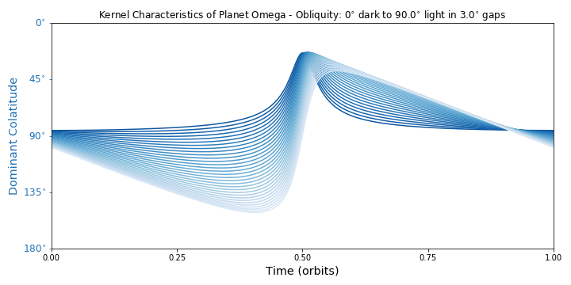

The Directly Imaged Planet¶
This class is the heart and soul of ReflectDirect. It’s how you build, change, draw, and play with your worlds. Use it often and use it well.
-
class
reflectdirect.DirectImaging_Planet(name='This Exoplanet', n_clat=37, n_long=73, kind='ylm', mp_data=[[1, -1, 1.0], [2, 0, -1.0]], primeD=0, limit=True, alb_lims=[0.0, 1.0], invert=False, flip='none', blend='none', orbT=8640.0, ratRO=10.0, incD=85, oblD=0, solD=0, longzeroD=0)¶ An exoplanet that is directly imaged using reflected starlight.
This class is based on the model, equations, and discussion of Schwartz et al. (2016), S16 in the methods below. It has two sets of planetary parameters, a master and an alternate, that users control. These sets make calling many of the class methods simple and consistent. Several methods store figures that can be saved later.
Planet coordinates are colatitude and longitude. Orbital phase is zero when planet is opposite star from observer and increases CCW when system is viewed above star’s North pole.
- Methods:
Update Param Sets:
Use Param Sets:
Visualize Param Sets:
Other:
- Attributes:
- name (str):
- Your exoplanet’s name.
- times (1d array):
- Time array based on the master orbital period.
- n_clat (int):
- Number of colatitudes for the planetary grid.
- n_long (int):
- Number of longitudes for the planetary grid.
- clat_vec (1d array):
- Colatitude vector, zero to 180 degrees.
- long_vec (1d array):
- Longitude vector, zero to 360 degrees and zero in center.
- mono_long_vec (1d array):
- Monotonic longitude vector, -180 to 180 degrees.
- clats (2d array):
- Colatitude array, based on
clat_vec. - longs (2d array):
- Longitude array, based on
long_vec. - mono_longs (2d array):
- Monotonic longitude array, based on
mono_long_vec. - delta_clat (float):
- Gap between colatitudes.
- delta_long (float):
- Gap between longitudes.
- cos_clats (2d array):
- Cosine of colatitudes.
- cos_longs (2d array):
- Cosine of longitudes.
- sin_clats (2d array):
- Sine of colatitudes.
- sin_longs (2d array):
- Sine of longitudes.
- Master Params (append
_bfor Alternates): - albedos (2d array):
- The planet’s albedo values with shape (
n_clat,n_long). - incD (int or float):
- Inclination of orbital plane to the observer, in degrees. Zero is face-on, 90 is edge-on.
- longzeroD (int or float):
- Longitude of the sub-observer point when t=0, in degrees.
- oblD (int or float):
- Obliquity relative to the orbital angular frequency vector, in degrees. This is the tilt of the planet’s spin axis. Zero is North pole up, 90 is maximal tilt, 180 is North pole down.
- orbT (int or float):
- Orbital period of the planet in any time unit.
- ratRO (int or float):
- Ratio of the planet’s rotational and orbital angular frequencies. This is how many spins the planet makes per orbit. Can be fractional, and negative numbers are retrograde rotation.
- solD (int or float):
- The orbital phase of Northern Summer solstice, in degrees. If the rotational angular frequency vector is projected into the orbital plane, then this phase is where that projection points at the star.
Stored Figures:
- fig_equi —
EquiRect_Amap() - fig_geom —
Geometry_Diagram() - fig_kchar —
KChar_Evolve_Plot() - fig_kern —
Kernels_Plot() - fig_light —
LightCurve_Plot() - fig_orth —
Orthographic_Viewer() - fig_sand —
Sandbox_Reflection() - fig_spin —
SpinAxis_Constraints()
Constructor for the class DirectImaging_Planet.
All arguments are for your master map and params.
For your alternate map, inverts the master map. Other alternate params are set equal to the master values.
- Args:
- name (str):
- Your exoplanet’s name. Default is ‘This Exoplanet’.
- n_clat (int):
- Number of colatitudes for the planetary grid. Method ensures this is odd so the equator is included. Default is 37.
- n_long (int):
- Number of longitudes for the planetary grid. Method ensures this is odd so the prime meridian is included. Default is 73.
- kind (str):
Style of planetary map. Can be
- ‘pngA’ to average values from a png image,
- ‘pngI’ to interpolate values from a png image,
- ‘ylm’ to use spherical harmonics (default),
- ‘aryA’ to average values from a 2D array,
- ‘aryI’ to interpolate values from a 2D array.
- mp_data:
Depends on
kind.- For either ‘png’ this is the file path to your image.
- For ‘ylm’ this is an n-by-3 list of spherical harmonics with entries [degree ell, order m, coefficient]. Default list is [ [1, -1, 1.0], [2, 0, -1.0] ].
- For either ‘ary’ this is your 2D array itself.
Note
All png images are assumed to be equirectangular maps, which means:
- poles on top and bottom edges,
- equator horizontal across middle,
- prime meridian vertical in center,
- anti-prime meridian on left and right edges.
- primeD (int or float):
- Longitude of the prime meridian in degrees, relative to the input data. Rounded to the nearest grid longitude. Default is zero.
- limit (bool):
- Set the lowest and highest albedo values. Default is True.
- alb_lims (list):
- The albedo limits as [lower, upper]. Default is [0, 1.0].
- invert (bool):
- Linearly change lower albedo values to higher values and vice versa. Default is False.
- flip (str):
Can be
- ‘EW’ to flip map about the prime meridian,
- ‘NS’ to flip map about the equator,
- ‘both’ to flip map both ways,
- ‘none’ to do nothing (default).
- blend (str):
Can be
- ‘EW’ to blend map into Jupiter-like bands,
- ‘NS’ to blend map into beach ball-like stripes,
- ‘both’ to blend map into a uniform ball,
- ‘none’ to do nothing (default).
- orbT (int or float):
- Orbital period of the planet in any unit. Default is 8640.0 (number of hours in one year).
- ratRO (int or float):
- Ratio of the planet’s rotational and orbital angular frequencies. Default is 10.0.
- incD (int or float):
- Inclination in degrees. Default is 85.
- oblD (int or float):
- Obliquity in degrees. Default is zero.
- solD (int or float):
- Solstice in degrees. Default is zero.
- longzeroD (int or float):
- Longitude of the sub-observer point when t=0, in degrees. Default is zero.
-
Adjust_Geometry(which='both', incD='no', oblD='no', solD='no', longzeroD='no')¶ Changes the geometry your planet is in.
- Args:
- which (str):
Can be
- ‘mast’ to adjust master params,
- ‘alt’ to adjust alternate params,
- ‘both’.
- incD (int, float, or str):
- New inclination in degrees (0 to 90), or any string to keep the current value. Default is ‘no’. Other args have same format.
- oblD:
- New obliquity (0 to 180).
- solD:
- New solstice (0 to 360).
- longzeroD:
- New sub-observer longitude at t=0.
-
Adjust_MotionTimes(which='both', orbT='no', ratRO='no', orb_min='no', orb_max='no', rot_res='no')¶ Changes the orbital and rotational params of your planet.
- Args:
- which (str):
Can be
- ‘mast’ to adjust master
orbTandratRO, - ‘alt’ to adjust alternate values,
- ‘both’.
- ‘mast’ to adjust master
- orbT (int, float, or str):
- New orbital period in any unit, or any string to keep the current value. Default is ‘no’. Other args have same format.
- ratRO:
- New rotational-to-orbital frequency ratio.
The args below are set relative to the master params.
- orb_min:
- New minimum time in orbits, can be negative.
- orb_max:
- New maximum time in orbits, can be negative.
- rot_res:
- New number of time steps per rotation.
Note
Whatever you choose for
rot_res, there will be at least 360 time steps per full orbit.- Effect:
- Also updates
times, the time array based on the master orbital period.
-
Build_Amap(kind='ylm', mp_data=[[1, -1, 1.0], [2, 0, -1.0]], primeD=0, limit=True, alb_lims=[0.0, 1.0], into='mast', invert=False, flip='none', blend='none')¶ Creates an albedo map from input data.
- Args:
- kind (str):
Can be
- ‘pngA’ to average values from a png image,
- ‘pngI’ to interpolate values from a png image,
- ‘ylm’ to use spherical harmonics (default),
- ‘aryA’ to average values from a 2D array,
- ‘aryI’ to interpolate values from a 2D array.
- mp_data:
Depends on
kind.- For either ‘png’ this is the file path to your image.
- For ‘ylm’ this is an n-by-3 list of spherical harmonics with entries [degree ell, order m, coefficient]. Default list is [ [1, -1, 1.0], [2, 0, -1.0] ].
- For either ‘ary’ this is your 2D array itself.
Note
All png images are assumed to be equirectangular maps, which means:
- poles on top and bottom edges,
- equator horizontal across middle,
- prime meridian vertical in center,
- anti-prime meridian on left and right edges.
- primeD (int or float):
- Longitude of the prime meridian in degrees, relative to the input data. Rounded to the nearest grid longitude. Default is zero.
- limit (bool):
- Set the lowest and highest albedo values. Default is True.
- alb_lims (list):
- The albedo limits as [lower, upper]. Default is [0, 1.0].
- into (str):
Where the new map goes. Can be
- ‘mast’ for the master map,
- ‘alt’ for the alternate map (default),
- ‘none’ to just return the map.
- invert (bool):
- Linearly change lower albedo values to higher values and vice versa. Default is False.
- flip (str):
Can be
- ‘EW’ to flip map about the prime meridian,
- ‘NS’ to flip map about the equator,
- ‘both’ to flip map both ways,
- ‘none’ to do nothing (default).
- blend (str):
Can be
- ‘EW’ to blend map into Jupiter-like bands,
- ‘NS’ to blend map into beach ball-like stripes,
- ‘both’ to blend map into a uniform ball,
- ‘none’ to do nothing (default).
- Effect:
- If
intois ‘mast’ or ‘alt’, stores new albedo map asalbedosoralbedos_b, respectively. - Returns:
- New albedo map with shape (
n_clat,n_long), ifintois ‘none’.
-
EquiRect_Amap(alt=True, same_scale=True, grat=True)¶ Shows your albedo maps in equirectangular projection.

This projection is a simple rectangle: colatitudes are horizontal lines and longitudes are vertical lines. The master map is always shown, and the color schemes adapt to the albedo values you are using (real, semi-real, or unrealistic).
- Args:
- alt (bool):
- Include the alternate map. Default is True.
- same_scale (bool):
- If the master and alternate maps have the same color scheme, then show both on the same color scale. Default is True.
- grat (bool):
- Overlay a basic graticule. Default is True.
- Effect:
- Stores this matplotlib figure as
fig_equi, overwriting the previous version. You can save the image later by callingfig_equi.savefig(...).
-
Geometry_Diagram(which='mast', _active=False, incD=85, oblD=0, solD=0, ratRO=10.0, phaseD=[0], ph_colors=['k'])¶ Makes a diagram of the geometry your planet is in.

This shows its inclination, obliquity, solstice, and spins per orbit.
- Args:
- which (str):
Can be
- ‘mast’ to use master params (default),
- ‘alt’ to use alternate params.
Note
Starting with
_active, ignore the remaining arguments. These are used by the interactive functionSandbox_Reflection().- Effect:
- Stores this matplotlib figure as
fig_geom, overwriting the previous version. You can save the image later by callingfig_geom.savefig(...).
-
Info_Printout()¶ Prints many of the current model parameters for your planet.
Grouped by grid, albedo map, motion, and geometry. The latter three are broken down further into the master and alternate cases.
-
InvertFlipBlend_Amap(image='mast', into='alt', invert=False, flip='none', blend='none')¶ Inverts, flips, and blends a given albedo map.
- Args:
- image (str or ndarray):
The source map. If string, can be
- ‘mast’ to use master map (default),
- ‘alt’ to use alternate map.
Otherwise, an ndarry or values.
- into (str):
Where the new map goes. Can be
- ‘mast’ for the master map,
- ‘alt’ for the alternate map (default),
- ‘na-pali-coast-wallpaper-for-one’ to just return the map.
Note
If you try to put an
imagendarrayintothe master or alternate map, it should have shape (n_clat,n_long).- invert (bool):
- Linearly change lower albedo values to higher values and vice versa. Default is False.
- flip (str):
Can be
- ‘EW’ to flip map about the prime meridian,
- ‘NS’ to flip map about the equator,
- ‘both’ to flip map both ways,
- ‘none’ to do nothing (default).
- blend (str):
Can be
- ‘EW’ to blend map into Jupiter-like bands,
- ‘NS’ to blend map into beach ball-like stripes,
- ‘both’ to blend map into a uniform ball,
- ‘none’ to do nothing (default).
- Effect:
- If
intois ‘mast’ or ‘alt’, stores new albedo map asalbedosoralbedos_b, respectively. - Returns:
- New albedo map with same shape as source map, if
intois ‘none’.
-
KChar_Evolve_Plot(char, which='mast', explode='none', gap=10, incD=85, oblD=0, solD=0, _active=False, phasesD_I=[0], ph_colors=['k'])¶ Plots the kernel’s characteristics over a full orbit.
If you want to get the actual data instead, use
Kernel_WidthDomColat().- Args:
- char (str):
The characteristic to show. Can be
- ‘wid’ for longitudinal width,
- ‘dom’ for dominant colatitude,
- ‘both’.
- which (str):
The param set to use. Can be
- ‘mast’ for master (default),
- ‘alt’ for alternate,
- ‘_c’ for custom, see Optional below.
- explode (str):
The geometry param to vary, starting at zero. This shows you many evolutions instead of one curve. Can be
- ‘inc’ for inclination,
- ‘obl’ for obliquity,
- ‘sol’ for solstice,
- ‘none’ to cancel (default).
- gap (int or float):
- When you choose to
explode, the exploded param’s spacing in degrees. Default is 10.
- Optional:
- incD, oblD, solD:
- Custom set of params to use if
whichis ‘_c’. Standard definitions and formats apply. See theclass and constructordocstrings.
Note
Starting with
_active, ignore the remaining arguments. These are used by the interactive functionSandbox_Reflection().- Effect:
- Stores this matplotlib figure as
fig_kchar, overwriting the previous version. You can save the image later by callingfig_kchar.savefig(...).
-
Kernel2D(os_trigs)¶ Calculates a planet’s 2D kernel of reflection.
This kernel is the product of visibility and illumination at each location on an exoplanet. See Section 2 of S16.
- Args:
- os_trigs (ndarray):
- Trig values describing the sub-observer and sub-stellar
points, with shape (8, # of time steps). Should
be formatted like the output of
SubOS_TimeDeg().
- Returns:
- 2D kernel with shape (# of time steps,
n_clat,n_long).
-
KernelClat(k2d)¶ Calculates a planet’s colatitudinal kernel.
Marginalizes the 2D kernel over longitude.
- Args:
- k2d (ndarray):
- 2D kernel with shape (# of time steps,
n_clat,n_long), like output fromKernel2D().
- Returns:
- Colatitudinal kernel with shape (# of time steps,
n_clat).
-
KernelLong(k2d)¶ Calculates a planet’s longitudinal kernel.
Marginalizes the 2D kernel over colatitude.
- Args:
- k2d (ndarray):
- 2D kernel with shape (# of time steps,
n_clat,n_long), like output fromKernel2D().
- Returns:
- Longitudinal kernel with shape (# of time steps,
n_long).
-
Kernel_WidthDomColat(which='mast', keep_kernels=False, times=0, orbT=8640.0, ratRO=10.0, incD=85, oblD=0, solD=0, longzeroD=0, bypass_time='no')¶ Calculates characteristics of the kernel over time.
The kernel of reflection has a longitudinal width (standard deviation) and a dominant colatitude (weighted average) that change throughout a planet’s orbit. See Section 2 of S16.
- Args:
- which (str):
The param set to use. Can be
- ‘mast’ for master (default),
- ‘alt’ for alternate,
- ‘_c’ for custom, see Optional below.
- keep_kernels (bool):
- Output all kernel info, not just the characteristics, see Returns below. Default is False.
- bypass_time (int, float, 1d array, or str):
- Time value(s) in place of the instance
times. All other master or alternate params are still used. Canceled if any string. Default is ‘no’.
- Optional:
- times, orbT, ratRO, incD, oblD, solD, longzeroD:
- Custom set of params to use if
whichis ‘_c’. Standard definitions and formats apply. See theclass and constructordocstrings.
- Returns:
- sig_long (array):
- Longitudinal widths, shape (# of time steps).
- dom_clat (array):
- Dominant colatitudes, shape (# of time steps).
- If
keep_kernelsis True, also: - actual_mu (array):
- Mean longitudes, shape (# of time steps).
- klong (array):
- Longitudinal kernel, shape (# of time steps,
n_long). - kclat (array):
- Colatitudinal kernel, shape (# of time steps,
n_clat). - k2d (array):
- 2D kernel, shape (# of time steps,
n_clat,n_long).
-
Kernels_Plot(phaseD, which='mast', grat=True, fixed_lims=True, force_bright=True, over_amap=False, albs=array([[ 1.]]), orbT=8640.0, ratRO=10.0, incD=85, oblD=0, solD=0, longzeroD=0, bypass_time='no')¶ Diagrams your planet’s kernel at a given orbital phase.

This includes the 2D, longitudinal, and colatitudinal versions of the kernel. The diagram also shows you the kernel’s mean longitude (pink circle), longitudinal width (red bars), and dominant colatitude (blue circle). If you want to get the actual data instead, use
Kernel_WidthDomColat().- Args:
- phaseD (int or float):
- Orbital phase of the planet in degrees. Standard range is [0, 360).
- which (str):
The param set to use. Can be
- ‘mast’ for master (default),
- ‘alt’ for alternate,
- ‘_c’ for custom, see Optional below.
- grat (bool):
- Overlay basic graticules. Default is True.
- fixed_lims (bool):
- Keep the plotted limits for the relative long. and colat. kernels fixed at [0, 1.0]. Default is True.
- force_bright (bool):
- Use the full color scale to draw the 2D kernel. The false brightness can make dark drawings (like crescent phases) easier to see. Default is True.
- over_amap (bool):
- Draw a dim version of the albedo map with the 2D kernel.
This map is not affected by
force_bright. Default is False. - bypass_time (int, float, 1d array, or str):
- Time value(s) in place of the instance
times. All other master or alternate params are still used. Canceled if any string. Default is ‘no’.
- Optional:
- albs (2D array):
- Custom albedo map to use if
whichis ‘_c’. Its shape should be, or work with, (n_clat, n_long). Default isnp.array( [ [ 1.0 ] ] ). - times, orbT, ratRO, incD, oblD, solD, longzeroD:
- Custom set of params to use if
whichis ‘_c’. Standard definitions and formats apply. See theclass and constructordocstrings.
- Effect:
- Stores this matplotlib figure as
fig_kern, overwriting the previous version. You can save the image later by callingfig_kern.savefig(...).
-
LightCurve_Plot(alt=True, diff=False, diff_only=False, show='flux', _active=False, times_I=0, orbT_I=8640.0, ratRO_I=10.0, incD_I=90, oblD_I=0, solD_I=0, longzeroD_I=0, ph_color='k', now_I=0)¶ Plots light curves of your planet.

Uses the master and alternate params to calculate the light curves. If you want to get the actual data instead, use
Light_Curves().- Args:
- alt (bool):
- Include the alternate case. Default is True.
- diff (bool):
- Include the difference between the master and alternate
light curves, if
altis True. Default is False. - diff_only (bool):
- Plot only the difference light curve, if
altis True. Default is False. - show (str):
Which light curves to calculate. Can be
- ‘flux’, the sum of [AK] where A is the albedo map and K is the kernel (default),
- ‘appar’ for apparent brightness, or flux divided by sum of the kernel,
- ‘both’.
Note
Starting with
_active, ignore the remaining arguments. These are used by the interactive functionSandbox_Reflection().- Effect:
- Stores this matplotlib figure as
fig_light, overwriting the previous version. You can save the image later by callingfig_light.savefig(...).
-
Light_Curves(which='mast', albs=array([[ 1.]]), times=0, orbT=8640.0, ratRO=10.0, incD=85, oblD=0, solD=0, longzeroD=0)¶ Calculates light curves of your planet.
Gives you both the exoplanet’s flux (the sum of [AK], where A is the albedo map and K is the kernel) and its apparent brightness (the flux divided by the sum of K) over time.
- Args:
- which (str):
The param set to use. Can be
- ‘mast’ for master (default),
- ‘alt’ for alternate,
- ‘_c’ for custom, see Optional below.
- Optional:
- albs (2D array):
- Custom albedo map to use if
whichis ‘_c’. Its shape should be, or work with, (n_clat,n_long). Default isnp.array( [ [ 1.0 ] ] ). - times, orbT, ratRO, incD, oblD, solD, longzeroD:
- Custom set of params to use if
whichis ‘_c’. Standard definitions and formats apply. See theclass and constructordocstrings.
- Returns:
- flux_ak (array):
- flux with shape (# of time steps).
- appar_a (array):
- apparent brightness with shape (# of time steps).
-
Orthographic_Viewer(phaseD, show='real', alt=False, same_scale=True, force_bright=True, _active=False, orbT_I=8640.0, ratRO_I=10.0, incD_I=90, oblD_I=0, solD_I=0, longzeroD_I=0)¶ Draws your planet’s map and kernel in orthographic projection.

Shows everything from the observer’s point of view (with one exception), based on the master and alternate params you are using. The North and South poles are drawn as a green circle and diamond, respectively.
- Args:
- phaseD (int or float):
- Orbital phase of the planet in degrees. Standard range is [0, 360).
- show (str):
Which data to draw. Can be
- ‘amap’ for the albedo map,
- ‘kern’ for the kernel,
- ‘both’ for the map and kernel separate,
- ‘real’ to multiply the map and kernel (default),
- ‘sphere’ for the whole globe: the visible and opposite hemispheres with no kernel.
- alt (bool):
- Include the alternate albedo map. Default is True.
- same_scale (bool):
- If the master and alternate maps have the same color scheme
(and
altis True), then show both with the same color scale. Default is True. - force_bright (bool):
- Use the full color scale to draw the kernel. Also rescales
the kernel values into [0, 1.0] when
showis ‘real’. The false brightness can make dark drawings (like crescent phases) easier to see. Default is True.
Note
Starting with
_active, ignore the remaining arguments. These are used by the interactive functionSandbox_Reflection().- Effect:
- Stores this matplotlib figure as
fig_orth, overwriting the previous version. You can save the image later by callingfig_orth.savefig(...).
-
Sandbox_Reflection()¶ Creates an interactive module about your directly imaged planet.

This module lets you explore how a planet’s geometry, motion, kernel, and light curves are related. You can also see predicted constraints on the planet’s spin axis (using the kernel and perfect data).
Note
The larger your
n_clatandn_long, the longer this module takes to update (e.g. seconds with default values).The sandbox combines several methods from the class
DirectImaging_Planetinto one compact display. See each for details:The planet and light curves are rendered using your master albedo map. You have a main orbital phase (magenta) to view and can save up to 3 extra phases (light, medium, dark) to compare. Each phase has a color-coded marker on the geometry diagram and kernel characteristics plot, plus its own light curve.
There are many controls (all angles in degrees):
- Inclination
- Obliquity
- Solstice
- Orbital Phase
- [which] Extra Phase Slot
- Save [extra phase]
- Clear [extra phase(s)]
- Spins per Orbit
- Time Steps per Spin
- Initial Longitude [at zero phase]
- [type of] Light Curve
- [type of] Axis Constraint
Note
For the subplot of spin axis constraints, curves are colored lightest to darkest in the phase order [main, light, medium, dark]. Red curves are for single phases, blue curves pairs of phases.
- Effect:
- Stores this matplotlib figure as
fig_sandwhenever you interact with the module. You can save the image later by callingfig_sand.savefig(...).
-
Setup_ProRet_Degeneracy()¶ Sets your alternate params for a specific light curve degeneracy.
The degeneracy involves the albedo map and is usually prograde vs. retrograde rotation (but see note below). Discussed in Section 4.5 and Appendix B3 of S16.
When a planet has zero obliquity and its orbit is edge-on to you (inclination 90 degrees), you cannot tell from a light curve whether:
- the planet does N spins per orbit (
ratRO) with an albedo map A, or - it does 1.0–N spins with an East-West flipped A.
Most often N and 1.0–N have opposite signs, so one version spins prograde and the other retrograde. This light curve degeneracy breaks down if the planet is tilted or its orbit is not edge-on.
After running this method, test with
Light_Curves(),LightCurve_Plot(), orOrthographic_Viewer().Note
If N is between 0 and 1.0, both versions of the planet spin prograde. And when N = 0.5, their spins are identical!
- Effect:
- Calls
InvertFlipBlend_Amap(),Adjust_Geometry(), andAdjust_MotionTimes(), using your master params to setup the alternate params as described.
- the planet does N spins per orbit (
-
SpinAxis_Constraints(phaseD_list, which='mast', constraint='both', info=True, combine=True, combine_only=False, keep_probdata=False, res=500, n_sol=361, n_obl=91, phaseD_sig=10.0, incD_sig=10.0, kwid_sig=10.0, kddc_sig=20.0, _active=False, incD_I=85, solD_I=0, oblD_I=0)¶ Plots how observations may constrain your planet’s spin axis.

These predictions use the kernel characteristics and assume your planet’s light curves at single orbital phases are invertible (see note below). Discussed in Section 4 of S16.
Say you are fitting a planet’s albedo map. We know the kernel depends on the planet’s spin axis (its obliquity and solstice). Invert a light curve from one orbital phase and you will also fit some East-West structure of the kernel, like the longitudinal width. Or invert from two different phases and you fit some North-South structure, like the change in dominant colatitude. So, kernel characteristics help us estimate constraints on the spin axis without doing inversions from real data.
Learn more about the kernel and its characteristics with
Kernel_WidthDomColat(),Kernels_Plot(), andKChar_Evolve_Plot().Note
Inverting a light curve will depend on the quality of the observational data. The planet’s albedo map matters too: East-West markings to sense daily brightness changes, North-South markings to sense longer changes.
We have pre-calculated characteristics stored in numpy binary files (the obvious two with names ending “values_all5deg.npy”). So, this method rounds inclination, obliquity, and solstice to the nearest 5 degrees. It also tracks the North (green circle) or South pole (green diamond) when obliquity is less than or greater than 90 degrees, respectively.
- Args:
- phaseD_list (list):
Orbital phases of the planet in degrees. Standard range is [0, 360). Phases are integers or floats, and list elements can be
- phase for a longitudinal width,
- [phase, phase] for a change in dominant colatitude.
- which (str):
The param set to use. Can be
- ‘mast’ for master (default),
- ‘alt’ for alternate,
- ‘_c’ for custom, see Optional below.
- constraint (str):
The type of prediction. Can be
- ‘perf’ for perfect constraints with no data uncertainties,
- ‘real’ to use uncertainties and show {1,2,3}–sigma regions,
- ‘both’ (default).
- info (bool):
- Include a legend subplot. Default is True.
- combine (bool):
- Join all constraints in a separate subplot. Default is True.
- combine_only (bool):
- Show only the combo constraint. Default is False.
- keep_probdata (bool):
- Output all probability data, see Returns below. Default is False.
- Optional:
- res (int):
- Resolution when
constraintis ‘real’, the number of probability contours to test. Default is 500. - n_sol (int):
- Number of solstice grid points. Default is 361.
- n_obl (int):
- Number of obliquity grid points. Default is 91.
- incD_I, solD_I, oblD_I:
- Custom set of params to use if
whichis ‘_c’. Standard definitions and formats apply. See theclass and constructordocstrings.
- Very Optional:
You should probably check out Section 4.1 of S16 before you change any of these.
- phaseD_sig (float):
- Uncertainty on orbital phase, in degrees. Default is 10.0.
- incD_sig (float):
- Uncertainty on inclination, in degrees. Default is 10.0.
- kwid_sig (float):
- Uncertainty on longitudinal, width in degrees. Default is 10.0.
- kddc_sig (float):
- Uncertainty on change in dominant colatitude, in degrees. Default is 20.0.
Note
Ignore the argument
_active. This is used by the interactive functionSandbox_Reflection().- Effect:
- Stores this matplotlib figure as
fig_spin, overwriting the previous version. You can save the image later by callingfig_spin.savefig(...). - Returns:
A list (user_file) if
keep_probdatais True andconstraintis not ‘perf’.- First entry is [incD, oblD, solD].
- Other entries are [id, 2D PDF, {1,2,3}–sigma probability levels], where id is either a phaseD_list element or ‘Combined’.
-
SubOS_TimeDeg(which='mast', times=0, orbT=8640.0, ratRO=10.0, incD=85, oblD=0, solD=0, longzeroD=0, bypass_time='no')¶ Calculates an planet’s sub-observer and -stellar locations over time.
Wrapper for
exoplanetsubspots.sub_observerstellar()that works with the classDirectImaging_Planet. See Appendix A of S16.- Args:
- which (str):
The param set to use. Can be
- ‘mast’ for master (default),
- ‘alt’ for alternate,
- ‘_c’ for custom, see Optional below.
- bypass_time (int, float, 1d array, or str):
- Time value(s) in place of the instance
times. All other master or alternate params are still used. Canceled if any string. Default is ‘no’.
- Optional:
- times, orbT, ratRO, incD, oblD, solD, longzeroD:
- Custom set of params to use if
whichis ‘_c’. Standard definitions and formats apply. See theclass and constructordocstrings.
- Returns:
Array of trigonometric values with shape (8, # of time steps). First dimension is ordered:
- sin theta_obs
- cos theta_obs
- sin phi_obs
- cos phi_obs
- sin theta_st
- cos theta_st
- sin phi_st
- cos phi_st